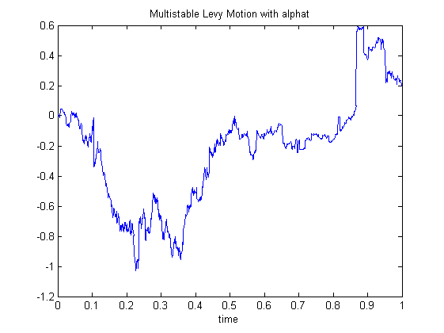
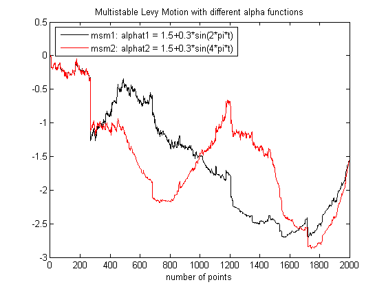

| FRACLAB Functions |
|
Generates a Multistable Levy Motion
MSM = msmlevy(N,ALPHA)
MSM = msmlevy(...,SEED)
MSM = msmlevy(N,ALPHA) Generates the multistable Levy motion, MSM, using a sample size, N, and a stability function, ALPHA. The parameter N is a positive integer and the parameter ALPHA is in (0,2). This allows to model a process whose index of stability varies in time.
MSM = msmlevy(...,SEED) Generates the multistable levy motion, MSM, with a specific random seed, SEED. This is useful to generate the same path several times or to compare the paths of different MSMs.
N = 1000; t = linspace(0,1,N); alphat = eval('1.5+0.3*sin(2*pi*t)');
msm = msmlevy(N,alphat);
figure; plot(t,msm);
title('Multistable Levy Motion with alphat'); xlabel('time')

N = 2000; t = linspace(0,1,N);
alphat1 = eval('1.5+0.3*sin(2*pi*t)');
alphat2 = eval('1.5+0.3*sin(4*pi*t)');
msm1 = msmlevy(N,alphat1,10);
msm2 = msmlevy(N,alphat2,10);
figure; plot(msm1,'k'); hold on; plot(msm2,'r');
legend('msm1: alphat1 = 1.5+0.3*sin(2*pi*t)','msm2: alphat2 = 1.5+0.3*sin(4*pi*t)','Location','NorthWest');
title('Multistable Levy Motion with different alpha functions');
xlabel('number of points');xlim([0 N])

msmlinmfrac, msmornhulen, asmlevy
[1] K. Falconer, J. Lévy Véhel "Multifractional, multistable, and other processes with prescribed local form", Journal of Theoretical Probability, Vol. 22 (2009) 375-401
| |
monolr | mst_processes | |